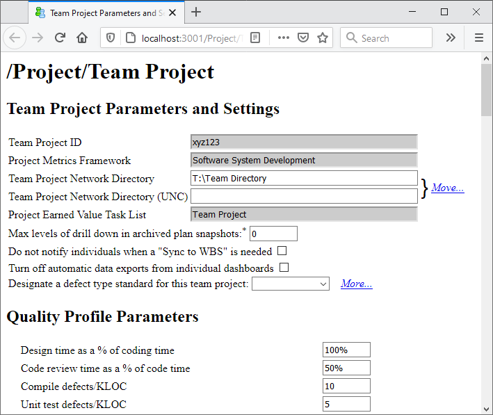

Because of the way the dashboard currently handles team quality data, it is necessary to create individual team member plans before you can view the team quality plan. This means that you should most likely alter the launch schedule, folding launch meeting No. 6 back into launch meeting No.4.
Once you have successfully validated the bottom-up team plan, you may proceed with the steps below.
During planning, teams create workflows to define their development process. If your team has created workflows, applied them to components in the WBS, assigned those tasks to individuals, and had the individuals perform a "Sync to WBS," you can view quality plans for each workflow in use.
To view the quality plan for a workflow, open the project's Rollup Plan Summary report, navigate to the "Workflow Summary" section, and select the workflow you wish to analyze.
Several of the tables and charts in the "Workflow Summary" section will depict the number of defects that the team expects to inject and remove in each phase, and the number of defects that will still be present in the components after the workflow is complete. If these values do not measure up to your team's quality goals, you can edit the quality parameters for the workflow, save the changes, and refresh this report.
Note: workflow-driven quality plans were introduced in Process Dashboard version 2.5. If you wish to view the quality plan for an older project, it may be necessary to open that team project's WBS at least once and save a trivial change. (This step gives the WBS Editor a chance to add default quality parameter values to the project workflows.)
The workflow-driven quality plans described above are informative because they are aligned to the custom processes the team has defined. But often, workflows only cover a portion of the end-to-end development process: for example, a team might have separate workflows for requirements vs implementation. In this case, it can be helpful to see a quality model that covers the entire development process, to estimate how many defects will remain in the final delivered product.
One powerful and flexible way to accomplish this is to create a workflow that describes the entire, end-to-end development process. Then, map all of the other workflows to this end-to-end workflow. After configuring those mappings, view the quality plan for the end-to-end workflow.
But for most projects, a much simpler approach is possible. The steps in every workflow are already mapped to the phases in the team project's metrics collection framework; so the dashboard can automatically generate an end-to-end quality plan based on those framework phases.
The framework-driven quality parameters can be edited on the Team Project Parameters and Settings page, which can be opened by clicking the appropriate item on the main Team Dashboard window.

This page includes:
Follow the guidance provided in the TSP process to create these estimates.
Using the quality parameters entered on the page above, and data from your team's project plan, the dashboard will calculate a quality plan for your project and include it as part of the overall project plan. To view this quality plan, switch to the Team Dashboard window, select the team project from the tree on the left, and click the Rollup Plan Summary option in the list on the right. The rollup plan summary will appear in your web browser.
Next, click the "Quality Summary" section from the list on the left.
This will display a quality plan based on the phases in the metrics
collection framework. You can drill down and see the quality plans for
various project subcomponents by clicking on the
( ) icon.
) icon.
If the calculated quality metrics do not meet your team's quality goals, you may edit the project quality parameters described above, in keeping with the guidance in the TSP process. To simplify this task, open two browser windows: one containing the project parameters page, and the other containing the calculated quality plan. As you edit the quality parameters, calculated values (displayed as numbers in grey boxes) will recalculate automatically. To update views of graphical charts, you will need to refresh the page manually.